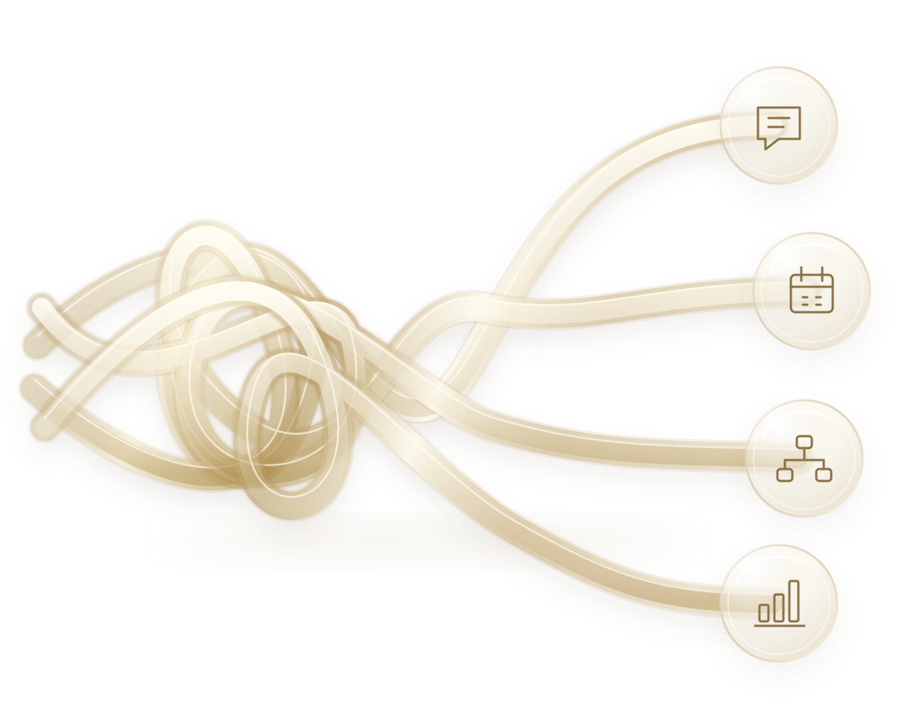

Deknit Untangle + Care
We map what's tangled, fix it with AI and automation, and keep it untangled, month by month.
Explore servicesWe find what's tangled, fix it with practical AI and automation, and keep it that way. Or we teach your team to do it themselves.
Month to month. Cancel with 2 weeks notice. You keep everything we build.

We map what's tangled, fix it with AI and automation, and keep it untangled, month by month.
Explore servicesSelf-paced lessons in practical AI and automation, so your team can untangle its own operations.
Explore the academyYou're not sure which clients are growing, at risk, or gone.
You can't say where every contract is or when it renews.
Leads and messages arrive everywhere, and some slip through.
You pay for tools that overlap, and nobody is sure which ones you still need.
Everything depends on the one person who knows how it works.
Your team does by hand what a machine could do in seconds.
That's a tangle. We can help.
We look at how your operations really run and name every tangle. You get the deknit map, including where your tools overlap and what you could save.
We fix the tangles in the order that matters most, with better process, automation, and AI where it genuinely helps.
Regular reviews catch new tangles early, so things don't knot up again as you grow.
We use AI and automation to find tangles faster, remove repetitive work, and keep your operations running smoothly. We start with the process, then add the technology, never the other way around.
A month 1 diagnosis, your deknit map, and then fixes in priority order.
Learn moreOngoing reviews and support that keep your operations from re-tangling.
Learn moreSelf-paced lessons that teach the method and the AI and automation skills to do it yourself.
Learn moreMonth to month. Cancel any month with 2 weeks notice. You keep your deknit map and everything we build, whether you stay or go.
I started in customer support and spent five years growing into leading operations across onboarding, activation, and support at a growing fintech. Along the way I built the automation, AI, and processes that let a lean team handle more without adding chaos. deknit is how I bring that to other growing teams.
Read my story